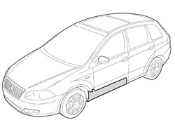
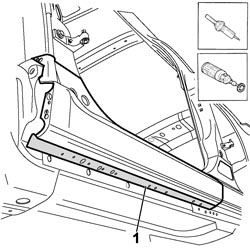
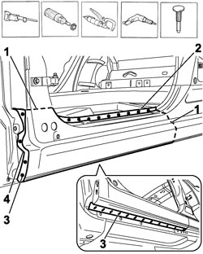
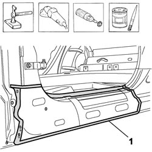
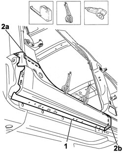
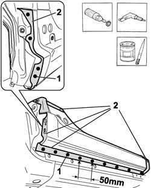
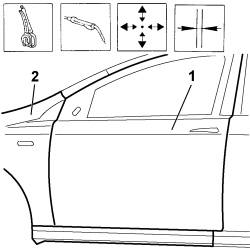
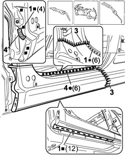
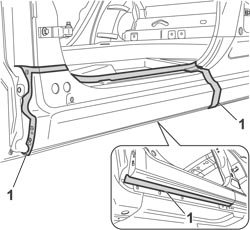

7210E45 R.R. PARTIAL DOOR SILL RAIL OUTER TRIM
- Path
- Procedures > 72 PANELS AND FRAMES > 7210 REMOVING-REFITTING > 7210E EXTERNAL PARTS > 7210E45 R.R. PARTIAL DOOR SILL RAIL OUTER TRIM
- Kind
- repair procedure (removal / refitting; the operation number is the code)
- Applies to
- all engines; all production periods
- Interactive page
- https://sloeber94.github.io/elrnDB-fCrm/en/#/194001249
Applies to: all engines; all production periods
 Removing
Removing
 Refitting
Refitting- Check that the components connected are not distorted by checking the bodyshell alignment measurements using suitable equipment (gauges, templates or jigs).
- Straighten the body as necessary.

Applies to: all engines; all production periods
1. Use a hot air blower and a wire brush to remove the underbody protection to be able to gain access the to spot welds.

Applies to: all engines; all production periods
1. Use a hack sawing machine following the cutting lines shown in the diagram.
- Use the rotary brush and remove the paint to access the spot welds.
2. Use the chamfering machine to remove the spot welds shown in the diagram.
3. Use the drill and chamfer the spot welds not accessible with the chamfering machine.
4. Use an oxyacetylene torch and a wire brush to unsolder the brazing at the point shown in the diagram.
- Use the hammer and chisel and remove the spot welds chamfered previously.
- Remove the front part of the underdoor side member outer trim from the vehicle.

Applies to: all engines; all production periods
- Straighten the edges of the door sill front housin using a mallet and dolly block.
- Remove the spot weld residues using a disc grinder.
- Use a rotary brush to clean the areas treated previously.
1. Apply electro-galvanizing paint.

Applies to: all engines; all production periods
- Take careful measurements and cut the replacement part, using the hack saw, remembering the need to keep a section of panel for overlapping.
1. Place the replacement part in position and secure it using self-locking clamps.
2. Using a circular saw cut the overlapping replacement panel (1) with the front pillar (2a) and with the final section (1c) of the underdoor panel.
- Remove the offcuts and the replacement part.

Applies to: all engines; all production periods
- Remove the anti-corrosion treatment from the entire perimeter of the inner and outer parts of the replacement part using the rotary brush.
1. Make equidistant holes using the drill along the lower and rear edges of the replacement part.
2. Apply electro-weldable paint to the edges treated previously.

Applies to: all engines; all production periods
Refitting
Removing- Fit the replacement part and tack it with several spot welds.
1. Provsionally fit the front door and seal.
2. Refit the front wing provisionally.
- Check the alignment and the eveness of the surrounding gaps, then remove the door, the seals and the front wing.

Applies to: all engines; all production periods
1. Use the MIG welder to fill weld at the points shown in the diagram.
2. Use a spot welder in the areas shown in the diagram.
3. Use the MIG welder to seam weld along the join lines with the front pillars and the with end section of the underdoor panel.
4. Use an oxyacetylene torch and carry out brazing at the point shown in the diagram.

Applies to: all engines; all production periods
- Correct any distortions to the panel using a hammer and dolly block.
- Use a disc grinder to level and remove the welding.
- Use a rotary brush to clean the areas welded previously.
1. Apply anti-oxidant protection to the areas involved in the welding.
- Seal the join lines between the replacement part and the vehicle.
- Apply underbody protection.
- Proceed with the painting stage.
- Apply wax-based protection to the inside of the underdoor side member.
